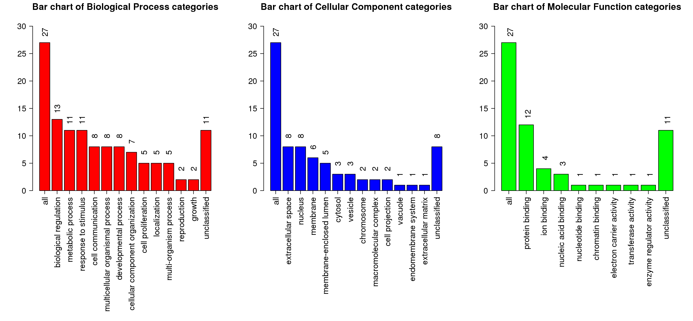

Summary (Result Download)
Enrich method: ORAOrganism:hsapiens
Enrichment Categories: geneontology_Biological_Process
Interesting gene list: immunoreactive_genes_sd_1532037753.txt. ID type: genesymbol
The interesting gene list contains 32 user IDs in which 27 user IDs are unambiguously mapped to the unique Entrez Gene IDs and 5 user IDs are mapped to multiple Entrez Gene IDs or could not be mapped to any Entrez Gene ID. The GO Slim summary are based upon the 27 unique Entrez Gene IDs.
Among the 27 unique Entrez Gene IDs, 16 IDs are annotated to the selected functional categories and also in the reference gene list, which are used for the enrichment analysis.
Reference gene list: uploads/background_genes_1532037753.txt ID type: genesymbol
The reference gene list contains 5000 IDs in which 4627 IDs are unambiguously mapped to the unique Entrez Gene IDs and 373 IDs are mapped to multiple Entrez Gene IDs or could not be mapped to any Entrez Gene ID.
Among the 4627 unique Entrez Gene IDs, 4020 IDs are annotated to the selected functional categories, which are used as the reference for the enrichment analysis.
Parameters for the enrichment analysis:
- Minimum number of Entrez Gene IDs in the category:5
- Maximum number of Entrez Gene IDs in the category:2000
- FDR Method:BH
- Significance Level: Top10
Mapped User IDs
| userid | Gene Symbol | Gene Name | Entrez Gene |
|---|---|---|---|
| CSAG2 | CSAG2 | CSAG family member 2 | 102723547 |
| UBD | UBD | ubiquitin D | 10537 |
| SCGB1D2 | SCGB1D2 | secretoglobin family 1D member 2 | 10647 |
| C1orf194 | C1orf194 | chromosome 1 open reading frame 194 | 127003 |
| RNF183 | RNF183 | ring finger protein 183 | 138065 |
| TCAM1P | TCAM1P | testicular cell adhesion molecule 1, pseudogene | 146771 |
| WDR49 | WDR49 | WD repeat domain 49 | 151790 |
| ARMC3 | ARMC3 | armadillo repeat containing 3 | 219681 |
| ZNF683 | ZNF683 | zinc finger protein 683 | 257101 |
| SMC1B | SMC1B | structural maintenance of chromosomes 1B | 27127 |
| CXCL17 | CXCL17 | C-X-C motif chemokine ligand 17 | 284340 |
| RUFY4 | RUFY4 | RUN and FYVE domain containing 4 | 285180 |
| IFNG | IFNG | interferon gamma | 3458 |
| CCDC160 | CCDC160 | coiled-coil domain containing 160 | 347475 |
| FASLG | FASLG | Fas ligand | 356 |
| CXCR2P1 | CXCR2P1 | C-X-C motif chemokine receptor 2 pseudogene 1 | 3580 |
| IDO1 | IDO1 | indoleamine 2,3-dioxygenase 1 | 3620 |
| CXCL10 | CXCL10 | C-X-C motif chemokine ligand 10 | 3627 |
| LDLRAD1 | LDLRAD1 | low density lipoprotein receptor class A domain containing 1 | 388633 |
| CSAG3 | CSAG3 | CSAG family member 3 | 389903 |
| LDHC | LDHC | lactate dehydrogenase C | 3948 |
| SCGB2A1 | SCGB2A1 | secretoglobin family 2A member 1 | 4246 |
| ETV7 | ETV7 | ETS variant 7 | 51513 |
| CXCL11 | CXCL11 | C-X-C motif chemokine ligand 11 | 6373 |
| BCL2L14 | BCL2L14 | BCL2 like 14 | 79370 |
| DYDC2 | DYDC2 | DPY30 domain containing 2 | 84332 |
| WISP3 | WISP3 | WNT1 inducible signaling pathway protein 3 | 8838 |
User IDs mapped to multiple Entrtez IDs or not mapped
| userid |
|---|
| LOC400696 |
| LOC647309 |
| LOC400759 |
| LOC647946 |
| C2orf65 |
GOSlim summary for the user list genes
Each Biological Process, Cellular Component and Molecular Function category is represented by a red, blue and green bar, repectively.The height of the bar represents the number of user list genes observed in the category. 
Detailed information of the enriched categories
The statistics

- C: the number of reference genes in the category
- O: the number of genes in the user gene list and also in the category
- E: The expected number in the category
- R: ratio of enrichment
- PValue: p value from hyergeometric test
- FDR: FDR from BH
- GO:0032496 response to lipopolysaccharide
- GO:0002237 response to molecule of bacterial origin
- GO:0071887 leukocyte apoptotic process
- GO:1901343 negative regulation of vasculature development
- GO:0006925 inflammatory cell apoptotic process
- GO:0009617 response to bacterium
- GO:0030595 leukocyte chemotaxis
- GO:0043949 regulation of cAMP-mediated signaling
- GO:0002690 positive regulation of leukocyte chemotaxis
- GO:0090026 positive regulation of monocyte chemotaxis
| ID:GO:0032496 Name:response to lipopolysaccharide | |||
|---|---|---|---|
| C=109; O=5; E=0.43; R=11.53; PValue=4.6e-05; FDR=1.38e-01 | |||
| userid | Gene Symbol | Gene Name | Entrez Gene |
| IFNG | IFNG | interferon gamma | 3458 |
| FASLG | FASLG | Fas ligand | 356 |
| IDO1 | IDO1 | indoleamine 2,3-dioxygenase 1 | 3620 |
| CXCL10 | CXCL10 | C-X-C motif chemokine ligand 10 | 3627 |
| CXCL11 | CXCL11 | C-X-C motif chemokine ligand 11 | 6373 |
| ID:GO:0002237 Name:response to molecule of bacterial origin | |||
|---|---|---|---|
| C=112; O=5; E=0.45; R=11.22; PValue=5.25e-05; FDR=1.38e-01 | |||
| userid | Gene Symbol | Gene Name | Entrez Gene |
| IFNG | IFNG | interferon gamma | 3458 |
| FASLG | FASLG | Fas ligand | 356 |
| IDO1 | IDO1 | indoleamine 2,3-dioxygenase 1 | 3620 |
| CXCL10 | CXCL10 | C-X-C motif chemokine ligand 10 | 3627 |
| CXCL11 | CXCL11 | C-X-C motif chemokine ligand 11 | 6373 |
| ID:GO:0071887 Name:leukocyte apoptotic process | |||
|---|---|---|---|
| C=30; O=3; E=0.12; R=25.12; PValue=1.97e-04; FDR=2.53e-01 | |||
| userid | Gene Symbol | Gene Name | Entrez Gene |
| IFNG | IFNG | interferon gamma | 3458 |
| FASLG | FASLG | Fas ligand | 356 |
| IDO1 | IDO1 | indoleamine 2,3-dioxygenase 1 | 3620 |
| ID:GO:1901343 Name:negative regulation of vasculature development | |||
|---|---|---|---|
| C=32; O=3; E=0.13; R=23.55; PValue=2.39e-04; FDR=2.53e-01 | |||
| userid | Gene Symbol | Gene Name | Entrez Gene |
| IFNG | IFNG | interferon gamma | 3458 |
| FASLG | FASLG | Fas ligand | 356 |
| CXCL10 | CXCL10 | C-X-C motif chemokine ligand 10 | 3627 |
| ID:GO:0006925 Name:inflammatory cell apoptotic process | |||
|---|---|---|---|
| C=7; O=2; E=0.03; R=71.79; PValue=3.08e-04; FDR=2.53e-01 | |||
| userid | Gene Symbol | Gene Name | Entrez Gene |
| IFNG | IFNG | interferon gamma | 3458 |
| FASLG | FASLG | Fas ligand | 356 |
| ID:GO:0009617 Name:response to bacterium | |||
|---|---|---|---|
| C=164; O=5; E=0.65; R=7.66; PValue=3.22e-04; FDR=2.53e-01 | |||
| userid | Gene Symbol | Gene Name | Entrez Gene |
| IFNG | IFNG | interferon gamma | 3458 |
| FASLG | FASLG | Fas ligand | 356 |
| IDO1 | IDO1 | indoleamine 2,3-dioxygenase 1 | 3620 |
| CXCL10 | CXCL10 | C-X-C motif chemokine ligand 10 | 3627 |
| CXCL11 | CXCL11 | C-X-C motif chemokine ligand 11 | 6373 |
| ID:GO:0030595 Name:leukocyte chemotaxis | |||
|---|---|---|---|
| C=91; O=4; E=0.36; R=11.04; PValue=3.63e-04; FDR=2.53e-01 | |||
| userid | Gene Symbol | Gene Name | Entrez Gene |
| CXCL17 | CXCL17 | C-X-C motif chemokine ligand 17 | 284340 |
| IFNG | IFNG | interferon gamma | 3458 |
| CXCL10 | CXCL10 | C-X-C motif chemokine ligand 10 | 3627 |
| CXCL11 | CXCL11 | C-X-C motif chemokine ligand 11 | 6373 |
| ID:GO:0043949 Name:regulation of cAMP-mediated signaling | |||
|---|---|---|---|
| C=8; O=2; E=0.03; R=62.81; PValue=4.1e-04; FDR=2.53e-01 | |||
| userid | Gene Symbol | Gene Name | Entrez Gene |
| CXCL10 | CXCL10 | C-X-C motif chemokine ligand 10 | 3627 |
| CXCL11 | CXCL11 | C-X-C motif chemokine ligand 11 | 6373 |
| ID:GO:0002690 Name:positive regulation of leukocyte chemotaxis | |||
|---|---|---|---|
| C=39; O=3; E=0.16; R=19.33; PValue=4.33e-04; FDR=2.53e-01 | |||
| userid | Gene Symbol | Gene Name | Entrez Gene |
| CXCL17 | CXCL17 | C-X-C motif chemokine ligand 17 | 284340 |
| CXCL10 | CXCL10 | C-X-C motif chemokine ligand 10 | 3627 |
| CXCL11 | CXCL11 | C-X-C motif chemokine ligand 11 | 6373 |
| ID:GO:0090026 Name:positive regulation of monocyte chemotaxis | |||
|---|---|---|---|
| C=9; O=2; E=0.04; R=55.83; PValue=5.26e-04; FDR=2.56e-01 | |||
| userid | Gene Symbol | Gene Name | Entrez Gene |
| CXCL17 | CXCL17 | C-X-C motif chemokine ligand 17 | 284340 |
| CXCL10 | CXCL10 | C-X-C motif chemokine ligand 10 | 3627 |